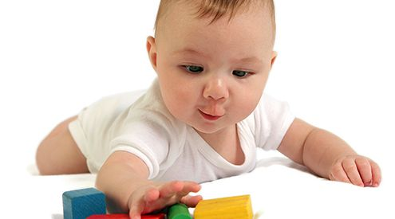
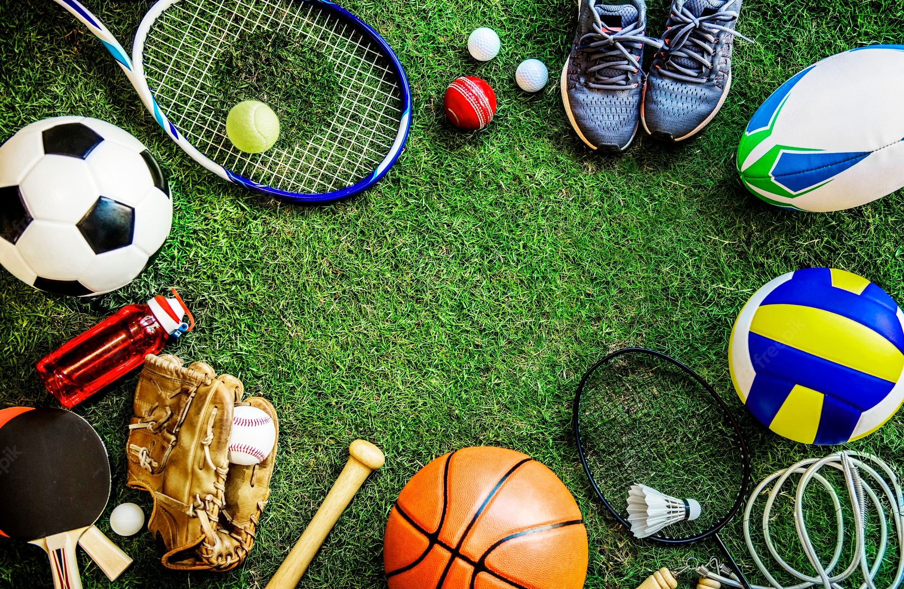
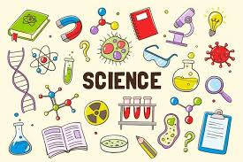

I was born in Seattle, Washington, in 2010, on a small landlocked island called Mercer Island. I am the middle child in a family of five: My twin sister is two minutes younger than me, and my older brother is 6 years older. Growing up, I always spent all my time with my sister since she was my best friend, and we used to share a bunk bed. In my free time, I liked reading, watching TV, and playing sports like soccer or basketball. Some of my favorite childhood books were the Harry Potter and the Percy Jackson series. In 3rd grade, I moved to a new elementary school called Solana Ranch and met all of the people who are now my closest friends. I then went to Pacific Trails Middle School and am currently at Canyon Crest Academy High School.

One of my favorite pastimes is playing sports. I play field hockey in the fall, soccer in the winter, and track in the spring. I love sports because I get to meet many new people and do exercise, but most of all, because I get to spend time with my friends. A lot of my closest friends are people I've met in sports. In my free time, I also enjoy baking and cooking. One of the most memorable things I've cooked is when my friends and I made homemade pasta with bolognese sauce. Some other things I do in my free time are watch TV shows and movies, read, play video games, and listen to music. In the future, I would like to try some new hobbies such as embroidery or sewing.

I am still uncertain about what field I want to go into when I grow up, but one thing I know for sure is that I am a STEM person and am more interested in math and science than in the humanities. Right now, some areas I am considering are computer science, biotechnology, or data science. However, I am still exploring different classes and new interests, and even though I know I want to go into a science, I am still unsure about what area to pursue, such as a natural science or a math-based science. In the future, I would like to go to college and am excited to travel around the world. Some places I want to visit in my lifetime are Switzerland, Spain, or South America. But, if I have the opportunity and the means, I would like to come back here to live in San Diego.